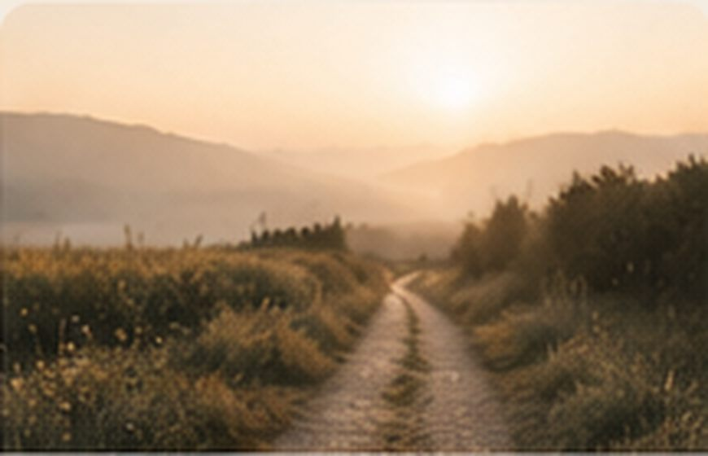

Когда заканчивается работа
Потеря работы — это не всегда только потеря дохода. Иногда вместе с ней исчезают привычный ритм, круг общения, ощущение собственной значимости и представление о будущем. Можно испытывать облегчение и тревогу, свободу и растерянность одновременно. Не обязательно сразу превращать завершение в новую возможность. Работа была частью твоей жизни, но никогда не была всей твоей жизнью.
Материалы и практики
Что я оставляю, а что беру с собой
Раздели лист на две части. Слева напиши, что осталось в завершившемся периоде: обязанности, отношения, ожидания, привычки. Справа — что продолжает принадлежать тебе: знания, опыт, навыки, связи, открытия. Всё это остаётся с тобой независимо от места работы.
Продолжить практику →
Зачем это упражнение: чтобы в собственном темпе исследовать переживания через действие, образы или слова — без требования получить правильный результат.
- Подготовь удобное место и материалы, названные в описании. Можно остановиться в любой момент.
- Выполни упражнение, описанное выше, не торопясь и замечая, какие решения хочется принимать по ходу.
- Посмотри на получившееся. Что оказалось важным? Что хочется сохранить, изменить или оставить без ответа?
Мои опоры
Выбери несколько небольших предметов. Каждый обозначает то, на что ты можешь опереться сейчас: люди, способности, воспоминания, личные качества, доступная помощь. Расположи их так, как хочется. Какие опоры уже рядом, а какие хотелось бы укрепить?
Продолжить практику →
Зачем это упражнение: чтобы в собственном темпе исследовать переживания через действие, образы или слова — без требования получить правильный результат.
- Подготовь удобное место и материалы, названные в описании. Можно остановиться в любой момент.
- Выполни упражнение, описанное выше, не торопясь и замечая, какие решения хочется принимать по ходу.
- Посмотри на получившееся. Что оказалось важным? Что хочется сохранить, изменить или оставить без ответа?

Форма нового
Из глины, пластилина или бумаги создай форму, отражающую твоё сегодняшнее состояние. Не старайся сделать её красивой. Затем попробуй немного изменить её. Какое небольшое изменение сейчас возможно в твоей жизни?
Продолжить практику →
Зачем это упражнение: чтобы в собственном темпе исследовать переживания через действие, образы или слова — без требования получить правильный результат.
- Подготовь удобное место и материалы, названные в описании. Можно остановиться в любой момент.
- Выполни упражнение, описанное выше, не торопясь и замечая, какие решения хочется принимать по ходу.
- Посмотри на получившееся. Что оказалось важным? Что хочется сохранить, изменить или оставить без ответа?
Интерактивная заметка
Здесь можно записать свои мысли. Нажми «Скачать заметку», чтобы сохранить её только на своём устройстве. Записи не отправляются на сайт.
Индивидуальная поддержка
На индивидуальной встрече можно исследовать переживания в собственном темпе, без необходимости приходить с готовыми ответами. Поддержка строится вокруг твоей ситуации и потребностей.
Познакомиться со специалистами →Группы и встречи
«Между вчера и завтра» — концепция поддерживающей арт-терапевтической группы. Через творчество, работу с материалами и разговор участники могут исследовать свой опыт. Даты и условия участия пока не определены.
Подробнее о группах →В завершение
Иногда мы ещё не знаем, что будет дальше. Но уже можем начать узнавать себя за пределами того, что закончилось.